SECCIÓN 9H
Asientos
Precaución: Desconecte el cable negativo de la batería antes de desmontar o instalar cualquier unidad eléctrica o cuando exista la posibilidad de que una herramienta o equipo pueda entrar en contacto con bornes eléctricos expuestos. La desconexión de dicho cable ayudará a evitar lesiones personales y daños al vehículo. La llave de contacto debe estar en posición LOCK a menos que se indique lo contrario.
ESPECIFICACIONES
Especificaciones de apriete
| Aplicación | N•m | Árbol de transmisión izquierdo | Articulación |
| Tornillos del respaldo del asiento delantero | 45 | 33 | - |
| Tornillos de la funda del asiento delantero | 12 | 9 | - |
| Tornillos del cojín del asiento delantero | 12 | 9 | - |
| Tornillos del guarnecido del asiento delantero | 12 | 9 | - |
| Tornillos de fijación del asiento delantero al piso | 45 | 33 | - |
| Tornillos del respaldo del asiento trasero | 25 | 18 | - |
| Tornillos de fijación del asiento trasero al piso | 45 | 33 | - |
| Guarnecido del asiento trasero | 12 | 9 | - |
| Tornillos del respaldo del asiento trasero | 12 | 9 | - |
| Tornillos del 3er asiento trasero | 45 | 33 | - |
| Pernos del conjunto deslizante | 25 | 18 | - |
| Tornillos del conjunto deslizante | 10 | - | 89 |
| Interruptor de la esterilla térmica | 2 | - | 18 |
| Tornillos de la caja de depósito de la consola trasera | 2 | - | 18 |
DIAGRAMAS DE ESQUEMAS Y DIRECCIONES
Circuito de la esterilla térmica
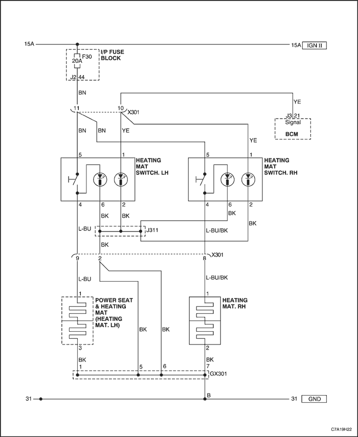


Circuito del regulador eléctrico del asiento
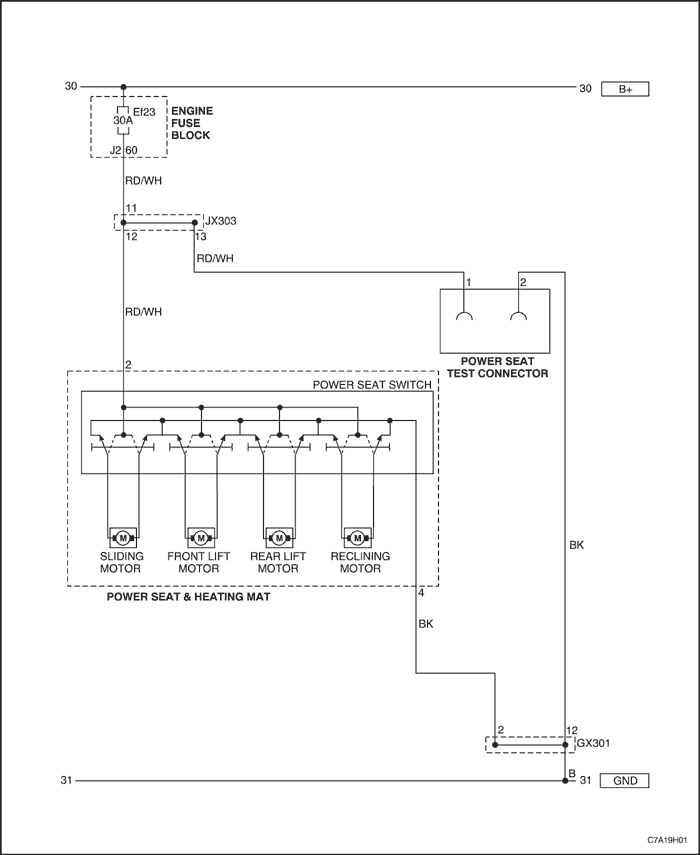
DIAGNÓSTICO
Regulador eléctrico del asiento
Precaución: Cuando el motor del asiento del conductor recibe corriente de alimentación directamente de la batería, pueden producirse lesiones personales provocadas por chispas o un calentamiento repentino de los terminales si los cables de la batería entran en contacto. Utilice un cable puente con fusible y adaptadores de prueba de terminales si dispone de los mismos. Si no dispone de adaptadores de prueba de terminales, use cinta aislante para reducir la posibilidad de contacto entre los puentes.
Ayudas para el diagnóstico
En caso de medir la resistencia entre los terminales de los conectores del motor, la resistencia del motor de avance/retroceso es aproximadamente de 1 Ω, la resistencia del motor de ajuste de la altura delantera es aproximadamente de 5 Ω y la del motor de ajuste de la altura trasera aproximadamente de 9 Ω.
No funciona la regulación eléctrica del asiento del conductor
| Paso | Medida | Valor(es) | Sí | No |
| 1 | Compruebe física y visualmente que las conexiones de los siguientes conectores están bien: - El conector de cuatro patillas situado debajo del asiento del conductor.
- El conector al interruptor del asiento del conductor con regulación eléctrica.
¿Están los conectores bien sujetos? | - | Vaya al Paso 3 | Vaya al Paso 2 |
| 2 | - Enchufe los conectores adecuadamente.
- Intente regular la posición del asiento del conductor con regulación eléctrica.
¿Funciona el asiento del conductor con regulación eléctrica una vez enchufados los conectores correctamente? | - | Sistema OK | Vaya al Paso 3 |
| 3 | Intente regular el asiento del conductor en cada una de las tres direcciones: avance/retroceso, altura delantera, altura trasera. ¿Se ajusta el asiento en todas las direcciones? | - | Vaya al Paso 8 | Vaya al Paso 4 |
| 4 | - Desenchufe el conector de cuatro patillas del cableado de la carrocería situado debajo del asiento del conductor.
- Gire la llave de contacto a la posición ON.
- Compruebe la tensión en el cable rojo/blanco y en el lado del cableado de la carrocería del conector de cuatro patillas.
¿El valor de la tensión es el mismo que el especificado? | 11-14 V | Vaya al Paso 6 | Vaya al Paso 5 |
| 5 | Repare la alimentación de corriente al cable rojo/blanco y al fusible Ef23. ¿Se ha realizado la reparación? | - | Sistema OK | - |
| 6 | Utilice un ohmímetro para comprobar la resistencia entre masa y el cable negro del conector de cuatro patillas, lado del cableado de la carrocería. ¿Es igual la resistencia al valor especificado? | ≈ 0 Ω | Vaya al Paso 8 | Vaya al Paso 7 |
| 7 | Repare el cable negro abierto entre masa y el conector de cuatro patillas del lado del cableado de la carrocería situado debajo del asiento del conductor. ¿Se ha realizado la reparación? | - | Sistema OK | - |
| 8 | Intente ajustar hacia atrás y hacia delante la posición del asiento del conductor con regulación eléctrica. ¿Se mueve el asiento del conductor con regulación eléctrica hacia atrás y hacia delante? | - | Vaya al Paso 14 | Vaya al Paso 9 |
| 9 | - Desenchufe el conector eléctrico del interruptor del asiento del conductor con regulación eléctrica.
- Acerque la batería de un vehículo al interruptor del asiento del conductor con regulación eléctrica lo suficiente para que los cables puente lleguen de la batería al interruptor.
- Conecte un cable puente entre el borne negativo de la batería de prueba y el terminal 3 del lado del motor del interruptor del asiento del conductor con regulación eléctrica.
- Con cuidado, conecte un cable puente entre el borne positivo de la batería de prueba y el terminal 4 del lado del motor del interruptor del asiento del conductor con regulación eléctrica. Se recomienda usar un cable puente con fusible porque los terminales están muy cerca y el motor puede sufrir un cortocircuito. No deje que los cables de la batería entren en contacto uno con otro. Si el motor está bien y no está en el final de su recorrido, el asiento del conductor con regulación eléctrica debería moverse.
- Para que el motor pueda funcionar en la dirección contraria, invierta con cuidado las conexiones de la batería.
¿Se mueve el motor hacia atrás y hacia delante cuando recibe corriente directamente de la batería de un vehículo? | - | Vaya al Paso 10 | Vaya al Paso 11 |
| 10 | - Sustituya el interruptor del asiento del conductor con regulación eléctrica.
- El interruptor del asiento del conductor con regulación eléctrica puede instalarse hacia atrás, así que, antes de montar nuevamente el guarnecido delantero del asiento del conductor con regulación eléctrica y el interruptor, pruebe el interruptor para verificar que esté bien instalado.
- Monte el guarnecido delantero del asiento del conductor con regulación eléctrica.
¿Se ha realizado la reparación? | - | Sistema OK | - |
| 11 | - Desenchufe el conector de dos patillas que une los 2 cables entre el interruptor del asiento del conductor con regulación eléctrica y el motor de avance/retroceso.
- Utilice un ohmímetro para comprobar la resistencia de los 2 cables entre el conector del interruptor del asiento del conductor con regulación eléctrica y el conector del motor de avance/retroceso.
¿Es la resistencia de cada cable igual al valor especificado? | ≈ 0 Ω | Vaya al Paso 13 | Vaya al Paso 12 |
| 12 | Repare el circuito abierto en el cable del terminal 3 o en el cable del terminal 4. ¿Se ha realizado la reparación? | - | Sistema OK | - |
| 13 | Sustituya el conjunto del motor del asiento del conductor con regulación eléctrica. ¿Se ha realizado la reparación? | - | Sistema OK | - |
| 14 | Intente ajustar la altura delantera del asiento del conductor con regulación eléctrica. ¿Funciona el ajuste de la altura delantera? | - | Vaya al Paso 18 | Vaya al Paso 15 |
| 15 | - Desenchufe el conector eléctrico del interruptor del asiento del conductor con regulación eléctrica.
- Acerque la batería de un vehículo al interruptor del asiento del conductor con regulación eléctrica lo suficiente para que los cables puente lleguen de la batería al interruptor.
- Conecte un cable puente entre el borne negativo de la batería de prueba y el terminal 5 del lado del motor del interruptor del asiento del conductor con regulación eléctrica.
- Con cuidado, conecte un cable puente entre el borne positivo de la batería de prueba y el terminal 6 del lado del motor del interruptor del asiento del conductor con regulación eléctrica. Se recomienda usar un cable puente con fusible porque los terminales están muy cerca y el motor puede sufrir un cortocircuito. No deje que los cables de la batería entren en contacto uno con otro. Si el motor está bien y no está en el final de su recorrido, el asiento del conductor con regulación eléctrica debería moverse.
- Para que el motor funcione en sentido contrario, invierta con cuidado las conexiones de la batería entre los 2 cables.
¿Se mueve el asiento hacia arriba y hacia abajo cuando el motor recibe corriente directamente de la batería de un vehículo? | - | Vaya al Paso 10 | Vaya al Paso 16 |
| 16 | - Desenchufe el conector de dos patillas que une los cables del terminal 5 y del terminal 6 entre el interruptor del asiento del conductor con regulación eléctrica y el motor de ajuste de la altura delantera.
- Utilice un ohmímetro para comprobar la resistencia de los cables del terminal 5 y del terminal 6 entre el conector del interruptor del asiento del conductor con regulación eléctrica y el conector del motor de ajuste de la altura delantera.
¿Es la resistencia de cada cable igual al valor especificado? | ≈ 0 Ω | Vaya al Paso 13 | Vaya al Paso 17 |
| 17 | Repare el circuito abierto en el cable del terminal 5 o en el cable del terminal 6. ¿Se ha realizado la reparación? | - | Sistema OK | - |
| 18 | Intente ajustar la altura trasera del asiento del conductor con regulación eléctrica. ¿Funciona el ajuste de la altura trasera? | - | Vaya al Paso 22 | Vaya al Paso 19 |
| 19 | - Desenchufe el conector eléctrico del interruptor del asiento del conductor con regulación eléctrica.
- Acerque la batería de un vehículo al interruptor del asiento del conductor con regulación eléctrica lo suficiente para que los cables puente lleguen de la batería al interruptor.
- Conecte un cable puente entre el borne negativo de la batería de prueba y el terminal 7 del lado del motor del interruptor del asiento del conductor con regulación eléctrica.
- Con cuidado, conecte un cable puente entre el borne positivo de la batería de prueba y el terminal 8 del lado del motor del interruptor del asiento del conductor con regulación eléctrica. Se recomienda usar un cable puente con fusible porque los terminales están muy cerca y el motor puede sufrir un cortocircuito. No deje que los cables de la batería entren en contacto uno con otro. Si el motor está bien y no está en el final de su recorrido, el asiento del conductor con regulación eléctrica debería moverse.
- Para que el motor funcione en sentido contrario, invierta con cuidado las conexiones de la batería entre los 2 cables.
¿Se mueve el asiento hacia arriba y hacia abajo cuando el motor recibe corriente directamente de la batería de un vehículo? | - | Vaya al Paso 10 | Vaya al Paso 20 |
| 20 | - Desenchufe el conector de dos patillas que une los cables del terminal 7 y del terminal 8 entre el interruptor del asiento del conductor con regulación eléctrica y el motor de ajuste de la altura delantera.
- Utilice un ohmímetro para comprobar la resistencia de los cables del terminal 7 y del terminal 8 entre el conector del interruptor del asiento del conductor con regulación eléctrica y el conector del motor de ajuste de la altura delantera.
¿Es la resistencia de cada cable igual al valor especificado? | ≈ 0 Ω | Vaya al Paso 13 | Vaya al Paso 21 |
| 21 | Repare el circuito abierto en el cable del terminal 5 o en el cable del terminal 6. ¿Se ha realizado la reparación? | - | Sistema OK | - |
| 22 | Intente regular la posición reclinando el asiento del conductor con regulación eléctrica. ¿Se reclina el asiento del conductor con regulación eléctrica? | - | Sistema OK | Vaya al Paso 23 |
| 23 | - Desenchufe el conector eléctrico del interruptor del asiento del conductor con regulación eléctrica.
- Acerque la batería de un vehículo al interruptor del asiento del conductor con regulación eléctrica lo suficiente para que los cables puente lleguen de la batería al interruptor.
- Conecte un cable puente entre el borne negativo de la batería de prueba y el terminal 9 del lado del motor del interruptor del asiento del conductor con regulación eléctrica.
- Con cuidado, conecte un cable puente entre el borne positivo de la batería de prueba y el terminal 10 del lado del motor del interruptor del asiento del conductor con regulación eléctrica. Se recomienda usar un cable puente con fusible porque los terminales están muy cerca y el motor puede sufrir un cortocircuito. No deje que los cables de la batería entren en contacto uno con otro. Si el motor está bien y no está en el final de su recorrido, el asiento del conductor con regulación eléctrica debería moverse.
- Para que el motor funcione en sentido contrario, invierta con cuidado las conexiones de la batería entre los 2 cables.
¿Se mueve el asiento hacia arriba y hacia abajo cuando el motor recibe corriente directamente de la batería de un vehículo? | - | Vaya al Paso 10 | Vaya al Paso 24 |
| 24 | - Desenchufe el conector de dos patillas que une los cables del terminal 9 y del terminal 10 entre el interruptor del asiento del conductor con regulación eléctrica y el motor de ajuste de la altura delantera.
- Utilice un ohmímetro para comprobar la resistencia de los cables del terminal 9 y del terminal 10 entre el conector del interruptor del asiento del conductor con regulación eléctrica y el conector del motor de ajuste de la altura delantera.
¿Es la resistencia de cada cable igual al valor especificado? | ≈ 0 Ω | Vaya al Paso 13 | Vaya al Paso 25 |
| 25 | Repare el circuito abierto en el cable del terminal 9 o en el cable del terminal 10. ¿Se ha realizado la reparación? | - | Sistema OK | - |
Esterilla térmica
La esterilla térmica no funciona
| Paso | Medida | Valor(es) | Sí | No |
| 1 | Compruebe la esterilla térmica. ¿Funciona la esterilla térmica? | - | Sistema OK | Vaya al Paso 2 |
| 2 | Compruebe el fusible F30. ¿Está fundido el fusible F30? | - | Vaya al Paso 3 | Vaya al Paso 4 |
| 3 | - Compruebe si hay algún cortocircuito y repárelo, si fuera necesario.
- Sustituya el fusible F30.
¿Se ha realizado la reparación? | - | Sistema OK | - |
| 4 | Utilice un voltímetro para comprobar la tensión en el terminal 5 del interruptor de cada esterilla térmica (izquierda y derecha). ¿Indica el voltímetro el valor especificado? | 11-14 V | Vaya al Paso 6 | Vaya al Paso 5 |
| 5 | Repare el circuito abierto entre el fusible F30 y el terminal 5 del interruptor de la esterilla térmica. ¿Se ha realizado la reparación? | - | Sistema OK | - |
| 6 | - Gire la llave de contacto a la posición ON.
- Active el interruptor de la esterilla térmica.
- Utilice un voltímetro para comprobar la tensión en el terminal 4 del interruptor de cada esterilla térmica (izquierda y derecha).
¿Indica el voltímetro el valor especificado? | 11-14 V | Vaya al Paso 8 | Vaya al Paso 7 |
| 7 | Sustituya el interruptor de la esterilla térmica. ¿Se ha realizado la reparación? | - | Sistema OK | - |
| 8 | - Gire la llave de contacto a la posición ON.
- Active el interruptor de la esterilla térmica.
- Utilice un voltímetro para comprobar la tensión en el terminal 1 de la esterilla térmica.
¿Indica el voltímetro el valor especificado? | 11-14 V | Vaya al Paso 10 | Vaya al Paso 9 |
| 9 | Repare el circuito abierto entre el terminal 2 del interruptor de la esterilla térmica izquierda o derecha y el terminal 1 de la alfombrilla. ¿Se ha realizado la reparación? | - | Sistema OK | - |
| 10 | - Gire la llave de contacto a la posición ON.
- Active el interruptor de la esterilla térmica.
- Utilice un voltímetro para comprobar la tensión en el terminal 2 de la esterilla térmica.
¿Está la tensión dentro de los valores especificados? | 11-14 V | Vaya al Paso 12 | Vaya al Paso 11 |
| 11 | Sustituya la esterilla térmica izquierda o derecha. ¿Se ha realizado la reparación? | - | Sistema OK | - |
| 12 | Sustituya el circuito de conexión a masa abierto. ¿Se ha realizado la reparación? | - | Sistema OK | - |
MANTENIMIENTO Y REPARACIÓN
servicio con vehículo en marcha
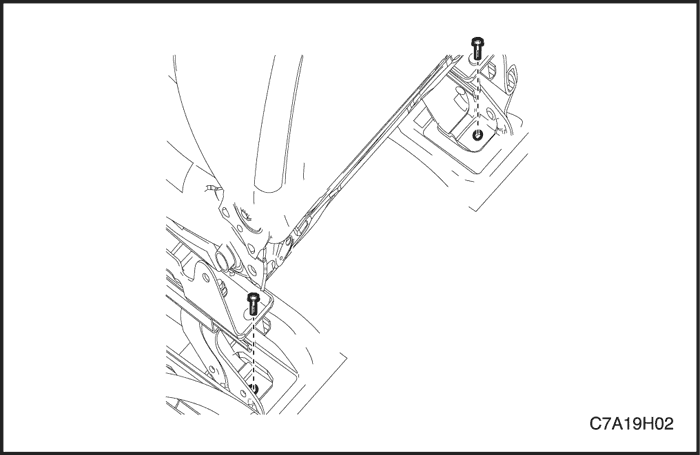
ASIENTO DELANTERO
(Se muestra el asiento del conductor con regulación manual, asiento del conductor con regulación eléctrica similar)
Procedimiento de desmontaje
- Desconecte el cable negativo de la batería.
- Quite las tapas de plástico y los tornillos que sujetan la parte posterior del asiento delantero al piso.
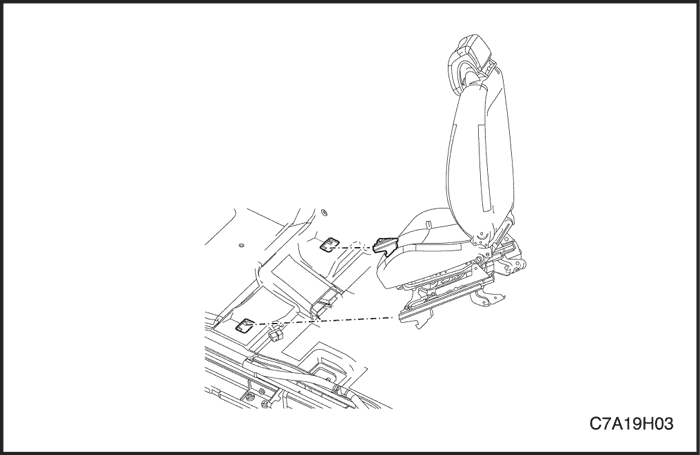
- Desenchufe los conectores eléctricos.
- Desmonte el asiento.
procedimiento de montaje
- Monte el asiento.
- Enchufe los conectores eléctricos.
Aviso: Metales distintos en contacto directo pueden corroerse rápidamente. Asegúrese de utilizar los elementos de sujeción correctos para evitar una corrosión prematura.
- Coloque los tornillos en la parte posterior del asiento delantero.
Apretar
Apriete los tornillos de fijación del asiento delantero al piso hasta 45 N•m (33 lb-pie).
- Coloque las tapas de plástico.
- Conecte el cable negativo de la batería.
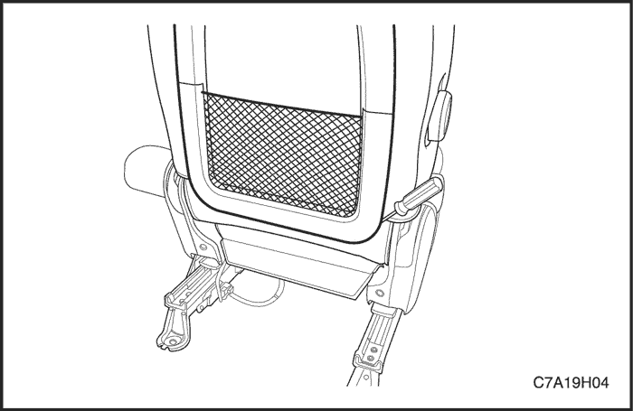
Respaldo de asiento delantero
Procedimiento de desmontaje
- Desmonte del vehículo el asiento delantero. Consulte el apartado "Asientos delanteros" de esta sección.
- Desmonte el panel trasero.
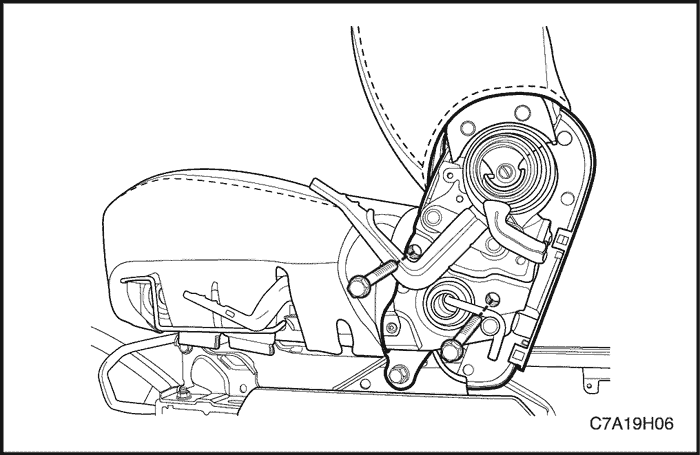
- Desmonte los guarnecidos del asiento.
- Desenchufe los conectores eléctricos.
- Quite los tornillos y desmonte el respaldo del asiento.
procedimiento de montaje
- Monte el respaldo sobre el cojín del asiento.
Aviso: Metales distintos en contacto directo pueden corroerse rápidamente. Asegúrese de utilizar los elementos de sujeción correctos para evitar una corrosión prematura.
- Coloque los tornillos del respaldo del asiento delantero.
Apretar
Apriete los tornillos del respaldo del asiento delantero hasta 45 N•m (33 lb-pie).
- Enchufe los conectores eléctricos.
- Monte los guarnecidos del asiento en su posición original.
- Monte el panel trasero sobre el asiento.
- Monte el asiento delantero en el vehículo. Consulte el apartado "Asientos delanteros" de esta sección.
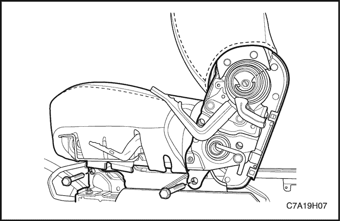
Cojín de asiento delantero
(Se muestra el asiento del conductor con regulación manual, asiento del conductor con regulación eléctrica similar)
Procedimiento de desmontaje
- Desmonte del vehículo el asiento delantero. Consulte el apartado "Asientos delanteros" de esta sección.
- Desmonte los guarnecidos del asiento.
- Quite los tornillos del cojín del asiento.
- Desmonte el cojín de la armadura del asiento.
procedimiento de montaje
- Monte el cojín en la armadura del asiento.
Aviso: Metales distintos en contacto directo pueden corroerse rápidamente. Asegúrese de utilizar los elementos de sujeción correctos para evitar una corrosión prematura.
- Monte el cojín del asiento con sus tornillos.
Apretar
Apriete los tornillos del cojín del asiento delantero hasta 12 N•m (106 lb-pulg.).
- Monte los guarnecidos del asiento.
- Monte el asiento delantero en el vehículo. Consulte el apartado "Asientos delanteros" de esta sección.
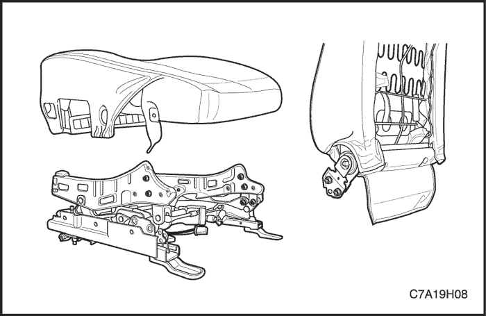
Armadura del asiento delantero
(Se muestra el asiento del conductor con regulación manual, asiento del conductor con regulación eléctrica similar)
Procedimiento de desmontaje
- Desmonte el respaldo del asiento. Consulte el apartado "Respaldo del asiento delantero" de esta sección.
- Desmonte el guarnecido del asiento. Consulte el apartado "Guarnecido del asiento delantero" de esta sección.
- Quite los tornillos del cojín del asiento.
- Desmonte la armadura del asiento del cojín.
procedimiento de montaje
- Monte el cojín en la armadura del asiento.
Aviso: Metales distintos en contacto directo pueden corroerse rápidamente. Asegúrese de utilizar los elementos de sujeción correctos para evitar una corrosión prematura.
- Monte la armadura del asiento en el cojín con los tornillos de éste.
Apretar
Apriete los tornillos del cojín del asiento delantero hasta 12 N•m (9 lb-pie).
- Monte el guarnecido del asiento. Consulte el apartado "Guarnecido del asiento delantero" de esta sección.
- Monte el respaldo del asiento. Consulte el apartado "Respaldo del asiento delantero" de esta sección.
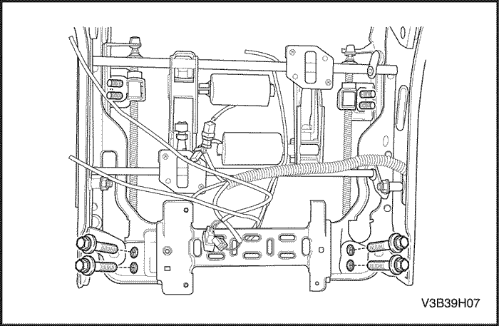
Conjunto deslizante del asiento del conductor con regulación eléctrica
Procedimiento de desmontaje
- Desmonte el asiento del conductor. Consulte el apartado "Asiento delantero" de esta sección.
- Desmonte el cojín del asiento delantero. Consulte el apartado "Cojín del asiento delantero" de esta sección.
- Desenchufe el conector eléctrico.
- Quite los pernos y los tornillos y desmonte el conjunto deslizante.
procedimiento de montaje
Aviso: Metales distintos en contacto directo pueden corroerse rápidamente. Asegúrese de utilizar los elementos de sujeción correctos para evitar una corrosión prematura.
- Monte el conjunto deslizante con sus tornillos y pernos.
Apretar
Apriete los pernos del conjunto deslizante hasta 25 N•m (18 lb-pie).
Apriete los tornillos del conjunto deslizante hasta 10 N•m (89 lb-pulg.).
- Enchufe el conector eléctrico.
- Monte el cojín del asiento delantero. Consulte el apartado "Cojín del asiento delantero" de esta sección.
- Monte el asiento del conductor. Consulte el apartado "Asiento delantero" de esta sección.
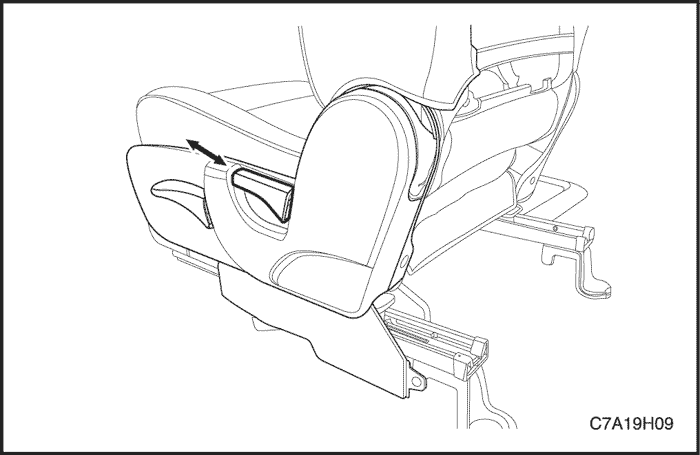
Palanca de inclinación del respaldo del asiento
(Se muestra el asiento del conductor con regulación manual, asiento del conductor con regulación eléctrica similar)
Procedimiento de desmontaje
- Desmonte la palanca de inclinación del respaldo del asiento.
procedimiento de montaje
Aviso: Metales distintos en contacto directo pueden corroerse rápidamente. Asegúrese de utilizar los elementos de sujeción correctos para evitar una corrosión prematura.
- Monte la palanca de inclinación del respaldo del asiento.
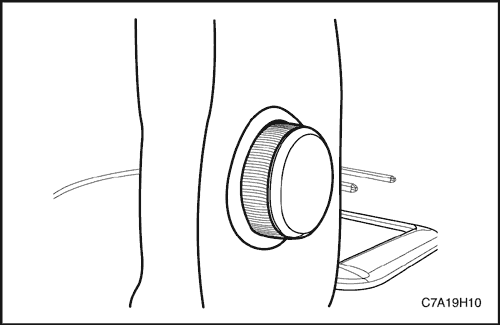
Mando de apoyo lumbar
Procedimiento de desmontaje
- Desmonte el mando del apoyo lumbar.
procedimiento de montaje
Aviso: Metales distintos en contacto directo pueden corroerse rápidamente. Asegúrese de utilizar los elementos de sujeción correctos para evitar una corrosión prematura.
- Monte el mando del apoyo lumbar.
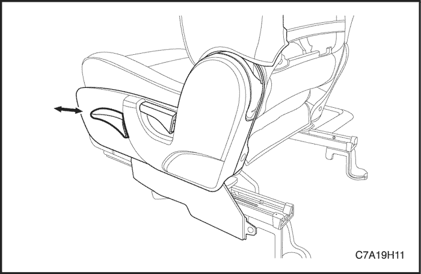
Palanca de ajuste de altura
Procedimiento de desmontaje
- Desmonte la palanca de ajuste de la altura.
procedimiento de montaje
Aviso: Metales distintos en contacto directo pueden corroerse rápidamente. Asegúrese de utilizar los elementos de sujeción correctos para evitar una corrosión prematura.
- Monte la palanca de ajuste de la altura.
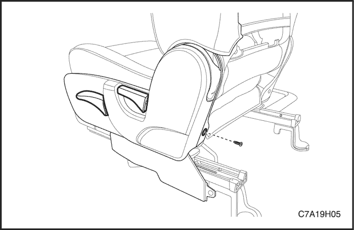
Tapizado de asiento delantero
(Se muestra el asiento del conductor con regulación manual, asiento del conductor con regulación eléctrica similar)
Procedimiento de desmontaje
- Desmonte del vehículo el asiento delantero. Consulte el apartado "Asientos delanteros" de esta sección.
- Quite el tornillo y desmonte la palanca de inclinación.
- Quite los tornillos y desmonte el guarnecido del asiento delantero.
procedimiento de montaje
Aviso: Metales distintos en contacto directo pueden corroerse rápidamente. Asegúrese de utilizar los elementos de sujeción correctos para evitar una corrosión prematura.
- Monte el guarnecido del asiento delantero con sus tornillos.
Apretar
Apriete los tornillos del guarnecido del asiento delantero hasta 12 N•m (106 lb-pulg.).
- Monte la palanca del mecanismo de inclinación.
- Monte el asiento delantero en el vehículo. Consulte el apartado "Asientos delanteros" de esta sección.
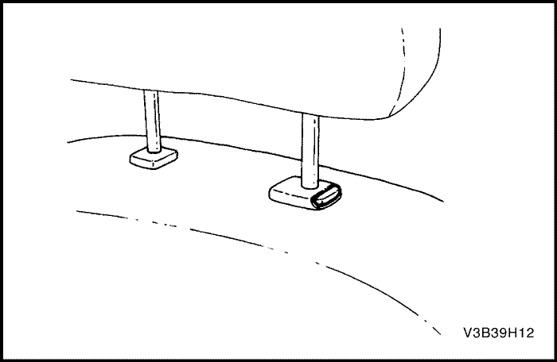
Apoyacabeza
Procedimiento de desmontaje
- Presione con la mano el botón de ajuste y desmonte el reposacabezas del respaldo del asiento.
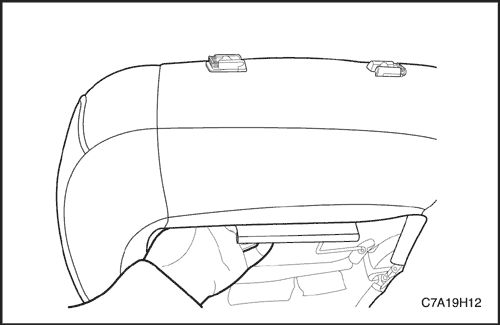
- Introduzca el lado trasero del reposacabezas del asiento y apriete el manguito.
- Desmonte el reposacabezas.
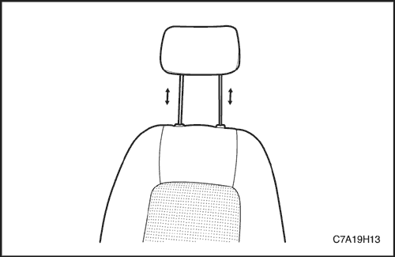
procedimiento de montaje
- Monte los manguitos guía en el respaldo del asiento y presione hacia abajo hasta que encajen en los cierres de retención de los manguitos guía.
- Monte la tapa del respaldo del asiento delantero.
- Monte el reposacabezas en los manguitos guía.
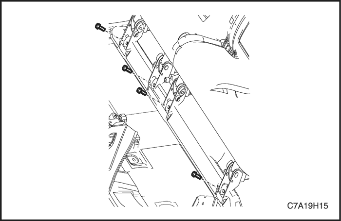
ASIENTO TRASERO
Procedimiento de desmontaje
- Quite los tornillos que sujetan la parte posterior del asiento trasero al piso.
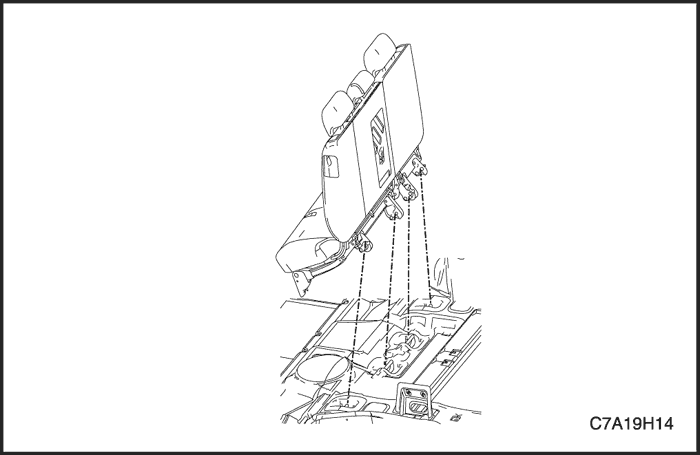
- Desmonte el asiento.
procedimiento de montaje
Aviso: Metales distintos en contacto directo pueden corroerse rápidamente. Asegúrese de utilizar los elementos de sujeción correctos para evitar una corrosión prematura.
- Monte el cojín del asiento trasero introduciendo los anillos metálicos en los soportes de sujeción traseros y presionando hacia abajo la parte delantera del cojín del asiento delantero.
- Coloque los tornillos en la parte posterior del asiento trasero.
Apretar
Apriete los tornillos del asiento trasero al piso hasta 45 N•m (33 lb-pie).
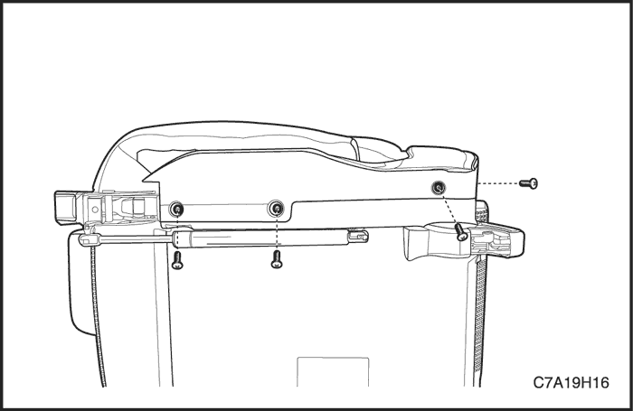
Guarnecido del asiento trasero
Procedimiento de desmontaje
- Desmonte del vehículo el asiento trasero. Consulte "Asiento trasero" en esta sección.
- Quite los tornillos y desmonte el guarnecido del asiento trasero.
procedimiento de montaje
Aviso: Metales distintos en contacto directo pueden corroerse rápidamente. Asegúrese de utilizar los elementos de sujeción correctos para evitar una corrosión prematura.
- Monte el guarnecido del asiento trasero con sus tornillos.
Apretar
Apriete los tornillos del guarnecido del asiento trasero hasta 12 N•m (9 lb-pie).
- Monte el asiento trasero en el vehículo. Consulte "Asiento trasero" en esta sección.
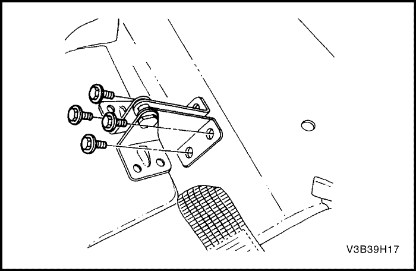
Respaldo del asiento trasero
Procedimiento de desmontaje
- Desmonte del vehículo el asiento trasero. Consulte "Asiento trasero" en esta sección.
- Desmonte el guarnecido del asiento trasero. Consulte el apartado "Guarnecido del asiento trasero" de esta sección.
- Quite los tornillos de los dos lados del asiento trasero.
- Desmonte el respaldo del asiento trasero.
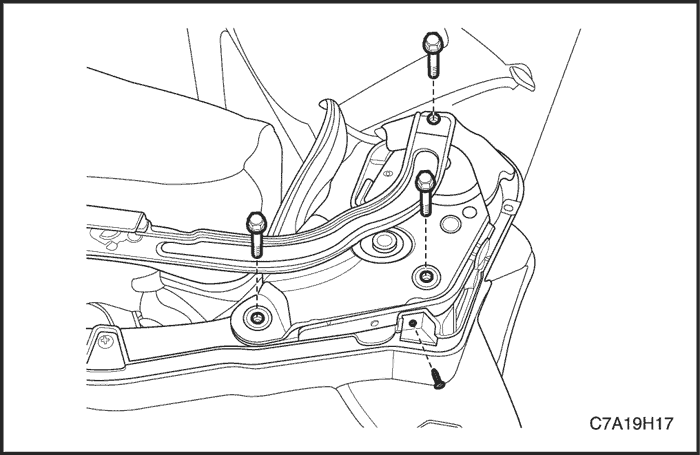
procedimiento de montaje
Aviso: Metales distintos en contacto directo pueden corroerse rápidamente. Asegúrese de utilizar los elementos de sujeción correctos para evitar una corrosión prematura.
- Monte el respaldo del asiento trasero con sus tornillos.
Apretar
Apriete los tornillos del respaldo del asiento trasero hasta 12 N•m (9 lb-pie).
- Monte el guarnecido del asiento trasero. Consulte el apartado "Guarnecido del asiento trasero" de esta sección.
- Monte el asiento trasero en el vehículo. Consulte "Asiento trasero" en esta sección.
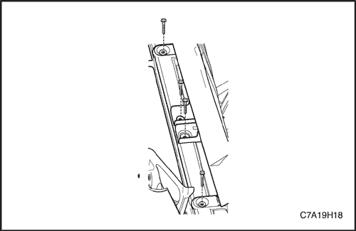
3er asiento trasero
Procedimiento de desmontaje
- Quite los tornillos que sujetan la parte posterior del 3er asiento trasero al piso.
- Desmonte el 3er asiento trasero.
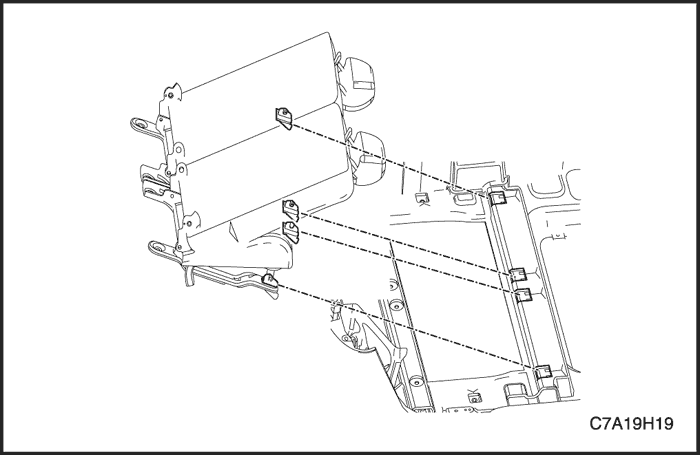
procedimiento de montaje
- Monte el 3er asiento trasero.
Aviso: Metales distintos en contacto directo pueden corroerse rápidamente. Asegúrese de utilizar los elementos de sujeción correctos para evitar una corrosión prematura.
- Coloque los tornillos en la parte posterior del 3er asiento trasero.
Apretar
Apriete los tornillos del asiento trasero al piso hasta 45 N•m (33 lb-pie).
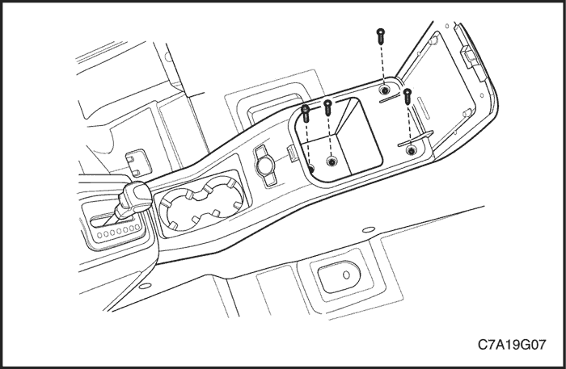
Interruptor de la esterilla térmica
Procedimiento de desmontaje
- Desconecte el cable negativo de la batería.
- Quite los tornillos de la caja de depósito de la consola trasera.
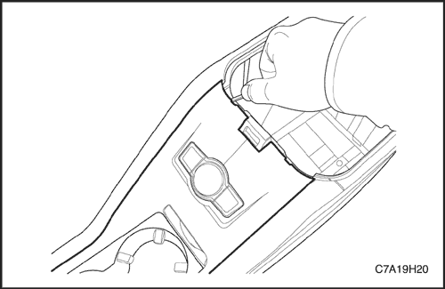
- Quite la tapa de la consola trasera y desenchufe el conector.
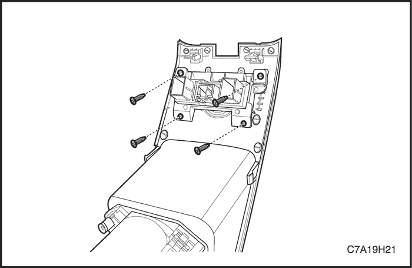
- Quite los tornillos y desmonte el interruptor de la esterilla térmica.
procedimiento de montaje
Aviso: Metales distintos en contacto directo pueden corroerse rápidamente. Asegúrese de utilizar los elementos de sujeción correctos para evitar una corrosión prematura.
- Monte el interruptor de la esterilla térmica con sus tornillos.
Apretar
Apriete los tornillos del interruptor de la esterilla térmica hasta 2 N•m (18 lb-pulg.).
- Enchufe el conector y monte la tapa de la consola trasera.
- Monte la caja de depósito de la consola trasera con sus tornillos.
Apretar
Apriete los tornillos de la caja de depósito de la consola trasera hasta 2 N•m (18 lb-pulg.).
- Conecte el cable negativo de la batería.
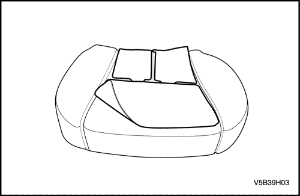
Esterilla térmica
(Se muestra el cojín del asiento, respaldo similar)
Precaución: Si la espuma del cojín o del respaldo del asiento se dañan al desmontar el elemento calefactor, sustituya el cojín o el respaldo con el fin de evitar lesiones personales.
Procedimiento de desmontaje
- Desconecte el cable negativo de la batería.
- Desconecte el cableado del airbag y de la esterilla térmica.
- Desmonte el respaldo del asiento y/o el cojín. Consulte los apartados "Respaldo del asiento delantero" y "Cojín del asiento delantero" de esta sección.
- Retire la funda del asiento del respaldo y/o del cojín del asiento.
- Despegue la esterilla térmica del cojín.
procedimiento de montaje
- Coloque la esterilla térmica.
- Coloque la funda del asiento en el respaldo y/o del cojín del asiento.
- Monte el respaldo del asiento y/o el cojín. Consulte los apartados "Respaldo del asiento delantero" y "Cojín del asiento delantero" de esta sección.
- Conecte el cableado del airbag y de la esterilla térmica.
- Conecte el cable negativo de la batería.
DESCRIPCIÓN GENERAL Y FUNCIONAMIENTO DEL SISTEMA
Asientos
No trate de modificar la posición de diseño del asiento alterando la disposición del anclaje del regulador del asiento con respecto al chasis o al piso. El cambio de esta posición podría afectar al rendimiento del sistema del asiento.
Este vehículo está provisto de asientos delanteros con reposacabezas regulables y un asiento corrido trasero para tres pasajeros con asiento trasero partido y plegable opcional. Los asientos delanteros también disponen de ajuste lumbar, de inclinación y de altura. El asiento de conductor con regulación eléctrica es opcional. Los cojines y respaldos disponen de almohadillas de espuma conformadas que se adaptan a los perfiles del conjunto de la armadura del respaldo y al perfil diseñado del marco del cojín.